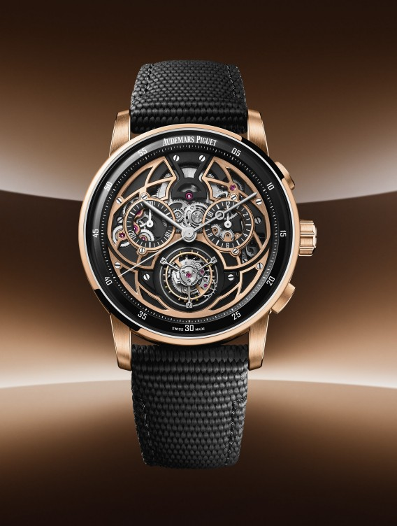
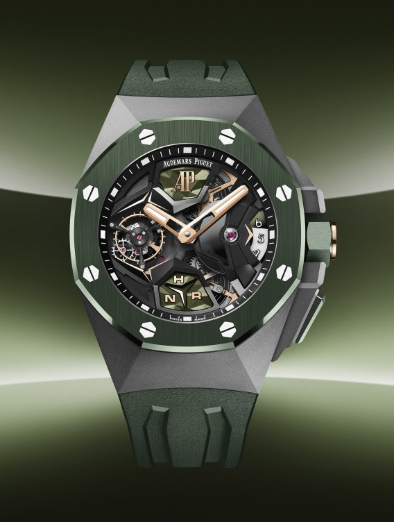
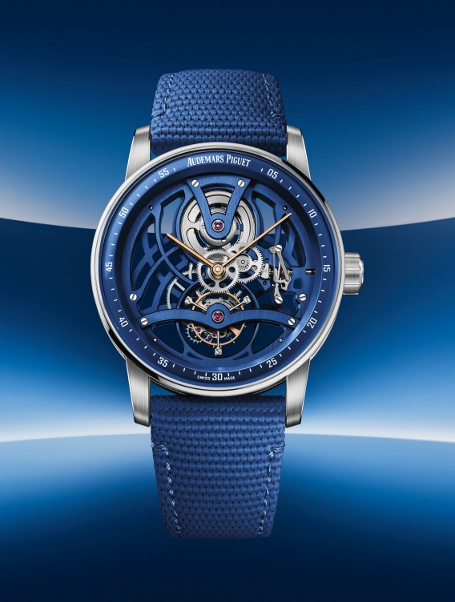
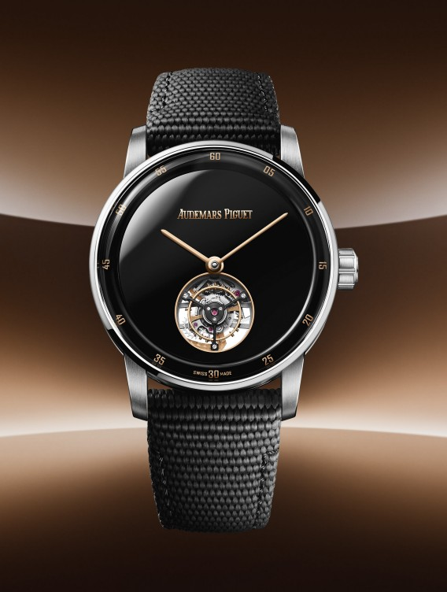
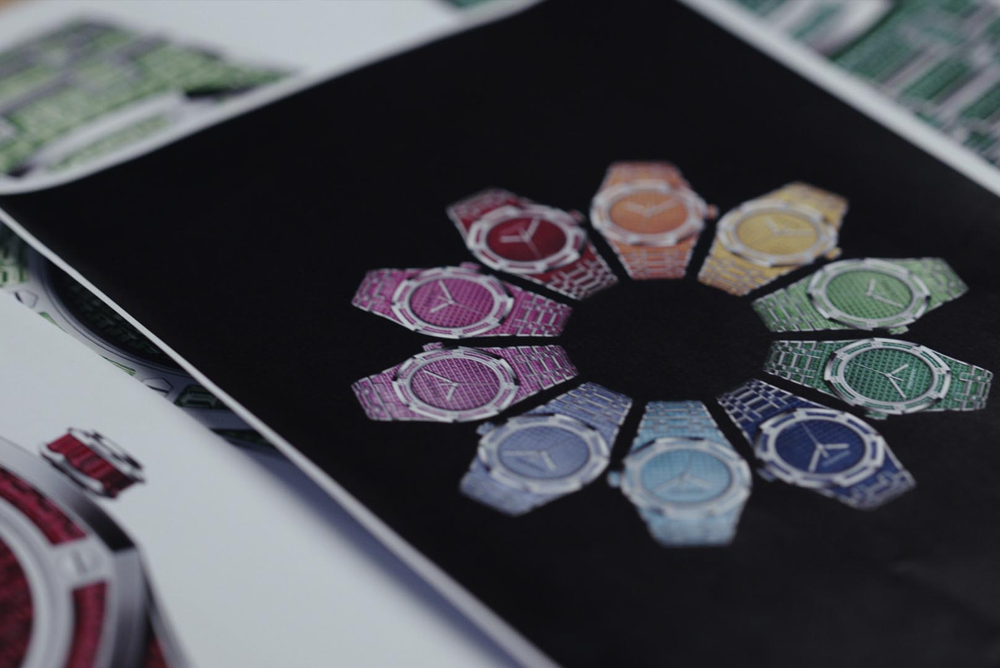
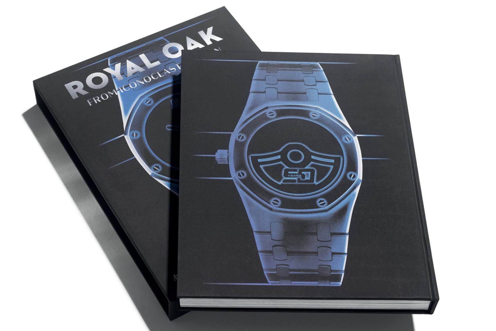
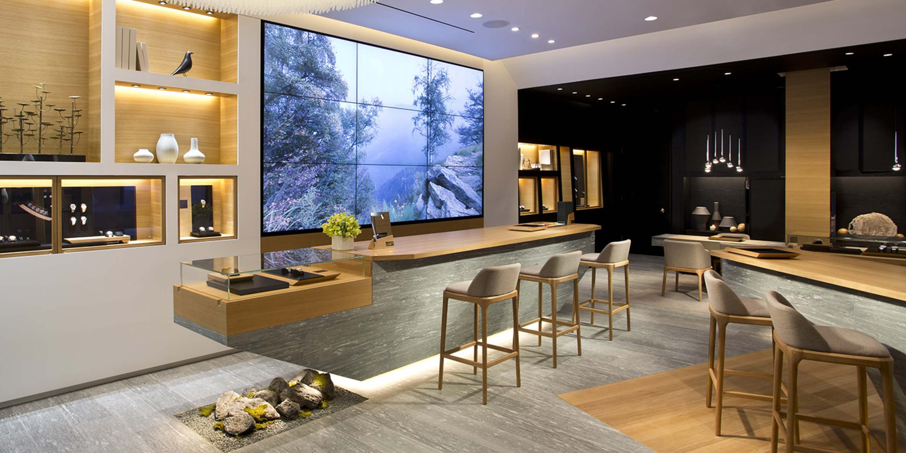
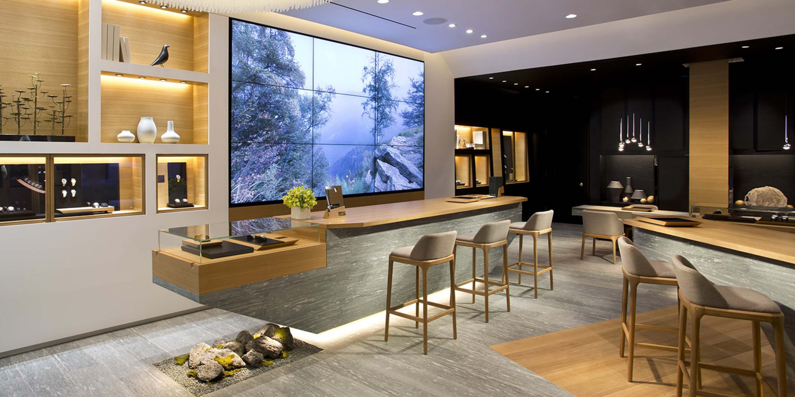

Royal Oak
Perpetual Calendar
Discover more
The alliance of
innovation and tradition
Flying Tourbillon Chronograph, Tourbillon Openworked, Perpetual Calendar, Flying
Tourbillon GMT: discover the new complicated watches which embody the
brand's uncompromising approach to craftsmanship. Their highly contemporary
and stylised designs highlight the creative possibility of ceramic as age-old
techniques merge with cutting-edge technology.
Royal Oak Perpetual Calendar
Entirely dressed in blue, the new Royal Oak Perpetual Calendar in 41 mm
presents for the first time a case and bracelet fully crafted in blue
ceramic. The matching blue Grande Tapisserie dial and subdials further
bestow the timepiece with an air of starlit sky.
Discover more

Code 11.59 by Audemars Piguet Flying Tourbillon Chronograph
The two-tone case of the limited edition of 50 pieces interlacing 18-carat
pink gold and black ceramic is echoed by the architectural movement in black
and pink-gold-toned hues that can be admired on both sides of the watch.

Discover more
Royal Oak Concept Flying Tourbillon GMT
The titanium case of the new 44mm Royal Oak Concept Flying Tourbillon GMT
iteration is topped off with a green ceramic bezel – a first in the
collection.

Discover more
Code 11.59 by Audemars Piguet Tourbillon Openworked
This limited edition of 50 pieces encompasses a contemporary two-tone case
interweaving 18-carat white gold with blue ceramic. The blue openworked
bridges and main plate, visible on both sides of the watch, echo the colour
of the case middle.

Discover more
Code 11.59 by Audemars Piguet Selfwinding Flying Tourbillon
The new timepiece encompasses a stylised two-tone case design interweaving
black ceramic with 18-carat white gold. A first in the collection, the black
onyx dial, enriched with subtle pink gold accents, adds an elegant touch.

Discover more

Royal Oak selfwinding
rainbow sets
Two unprecedented white gold Royal Oak Selfwinding sets in 37 and 41 mm
reinterpret the “traditional” rainbow watch to celebrate 50 years of Royal Oak
design innovation.
Learn more

A new pioneering book
written by Bill Prince
Audemars Piguet and publishing house Assouline celebrate the Royal Oak's
50th anniversary with a dedicated book entitled “Royal Oak: From Iconoclast to
Icon”. A journey through six decades of groundbreaking art, architecture,
fashion, music and culture, paralleling the evolution of the trailblazing Royal
Oak.
Learn more
Andreas Angelidakis :
center for the critical appreciation of antiquity
Artist Andreas Angelidakis's first solo exhibition in Paris,
Center for the Critical Appreciation of Antiquity
(2022), is now on view with free admission at the historic Espace Niemeyer until
30 October 2022.
Learn more
ROYAL OAK COLLECTION
CELEBRATING 50 YEARS
Building on the past, the 2022 offering takes the Royal Oak to new limits.
Discover more
AP CHRONICLES:
DIVE INTO THE ROYAL OAK'S HISTORY
Travel back in time and immerse yourself into the Royal Oak's universe through
enriched articles, technical sheets of models and calibres as well as exclusive
anecdotes and archival footages uncovered by our Heritage team.
Explore AP Chronicles
Musée Atelier
Audemars Piguet
Experience our heritage, craftsmanship and connection to the world in the Musée
Atelier Audemars Piguet which pays tribute to the craftspeople who have made
what Audemars Piguet is today, generation after generation.
Discover more
Our
collections
Discover the passion
Behind the craft
Born in le brassus
It is in the heart of the Vallée de Joux, a region that beats to the tune of
complicated watch mechanisms, that everything started for Audemars Piguet in
1875.
Discover more
Our Savoir-Faire
Since 1875, Audemars Piguet has perpetuated its founders' ancestral
savoir-faire in forward-thinking ways, consistently pushing further the
limits of the craft and anticipating society's ever-changing needs.
Discover more

Audemars Piguet & Art
Audemars Piguet Contemporary commissions international artists to create
contemporary artworks, fostering a global community of creators.
Discover more

Audemars Piguet & Music
Audemars Piguet shares its passion for music and excellence, bringing people
together through the language of emotions.
Discover more
Audemars Piguet & Golf
Whether on a green or in the universe of Haute Horlogerie, it is always a
question of precision and elegance, the beauty of both gesture and
performance.
Discover more
 

Find a
boutique
Explore all Boutiques
Get the
latest news
Be the first to reveice the latest news on our brand, products and upcoming
events.
Subscribe